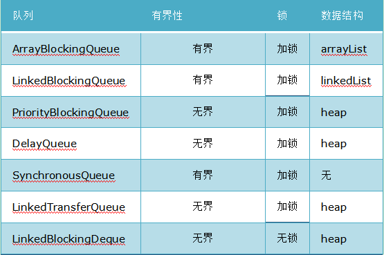

java_并发编程10阻塞队列¶
阻塞队列（BlockingQueue）是一个支持两个附加操作的队列。这两个附加的操作是：在队列为空时，获取元素的线程会等待队列变为非空。当队列满时，存储元素的线程会等待队列可用。阻塞队列常用于生产者和消费者的场景，生产者是往队列里添加元素的线程，消费者是从队列里拿元素的线程。阻塞队列就是生产者存放元素的容器，而消费者也只从容器里拿元素。
四种处理策略¶
| 方法\处理方式 | 抛出异常 | 返回特殊值 | 一直阻塞 | 超时退出 | | ———— | ——— | ——– | —— | —————– | | 插入方法 | add(e) | offer(e) | put(e) | offer(e,time,unit) | | 移除方法 | remove() | poll() | take() | poll(time,unit) | | 检查方法 | element() | peek() | 不可用 | 不可用 |
抛出异常：是指当阻塞队列满时候，再往队列里插入元素，会抛出IllegalStateException(“Queue full”)异常。当队列为空时，从队列里获取元素时会抛出NoSuchElementException异常 。
返回特殊值：插入方法会返回是否成功，成功则返回true。移除方法，则是从队列里拿出一个元素，如果没有则返回null
一直阻塞：当阻塞队列满时，如果生产者线程往队列里put元素，队列会一直阻塞生产者线程，直到拿到数据，或者响应中断退出。当队列空时，消费者线程试图从队列里take元素，队列也会阻塞消费者线程，直到队列可用。
超时退出：当阻塞队列满时，队列会阻塞生产者线程一段时间，如果超过一定的时间，生产者线程就会退出。
Java里的阻塞队列¶
JDK7提供了7个阻塞队列。分别是
ArrayBlockingQueue ：一个由数组结构组成的有界阻塞队列。
LinkedBlockingQueue ：一个由链表结构组成的有界阻塞队列。
PriorityBlockingQueue ：一个支持优先级排序的无界阻塞队列。
DelayQueue：一个使用优先级队列实现的无界阻塞队列。
SynchronousQueue：一个不存储元素的阻塞队列。
LinkedTransferQueue：一个由链表结构组成的无界阻塞队列。
LinkedBlockingDeque：一个由链表结构组成的双向阻塞队列。

实现原理¶
本文以ArrayBlockingQueue为例，其他阻塞队列实现原理可能和ArrayBlockingQueue有一些差别，但是大体思路应该类似，有兴趣的朋友可自行查看其他阻塞队列的实现源码。
首先看一下ArrayBlockingQueue类中的几个成员变量：
public class ArrayBlockingQueue<E> extends AbstractQueue<E>
implements BlockingQueue<E>, java.io.Serializable {
private static final long serialVersionUID = -817911632652898426L;
/** The queued items */
private final E[] items;
/** items index for next take, poll or remove */
private int takeIndex;
/** items index for next put, offer, or add. */
private int putIndex;
/** Number of items in the queue */
private int count;
/*
* Concurrency control uses the classic two-condition algorithm
* found in any textbook.
*/
/** Main lock guarding all access */
private final ReentrantLock lock;
/** Condition for waiting takes */
private final Condition notEmpty;
/** Condition for waiting puts */
private final Condition notFull;
}
核心元素
Object[] items：存放元素的数组
int takeIndex：下一个读操作的位置
int putIndex：下一个写操作的位置
int count：数组中元素的数量
ReentrantLock lock：同步器
Condition notEmpty：数组空了，读等待。写的时候，唤醒
Condition notFull：数组满了，写等待。读的时候，唤醒
可以看出，ArrayBlockingQueue中用来存储元素的实际上是一个数组，takeIndex和putIndex分别表示队首元素和队尾元素的下标，count表示队列中元素的个数。
lock是一个可重入锁，notEmpty和notFull是等待条件。
下面看一下ArrayBlockingQueue的构造器，构造器有三个重载版本：
public ArrayBlockingQueue(int capacity) {
}
public ArrayBlockingQueue(int capacity, boolean fair) {
}
public ArrayBlockingQueue(int capacity, boolean fair,
Collection<? extends E> c) {
}
第一个构造器只有一个参数用来指定容量，第二个构造器可以指定容量和公平性，第三个构造器可以指定容量、公平性以及用另外一个集合进行初始化。
然后看它的两个关键方法的实现：put()和take()：
public void put(E e) throws InterruptedException {
if (e == null) throw new NullPointerException();
final E[] items = this.items;
final ReentrantLock lock = this.lock;
lock.lockInterruptibly();
try {
try {
while (count == items.length)
notFull.await();
} catch (InterruptedException ie) {
notFull.signal(); // propagate to non-interrupted thread
throw ie;
}
insert(e);
} finally {
lock.unlock();
}
}
从put方法的实现可以看出，它先获取了锁，并且获取的是可中断锁，然后判断当前元素个数是否等于数组的长度，如果相等，则调用notFull.await()进行等待，如果捕获到中断异常，则唤醒线程并抛出异常。
当被其他线程唤醒时，通过insert(e)方法插入元素，最后解锁。
我们看一下insert方法的实现：
private void insert(E x) {
items[putIndex] = x;
putIndex = inc(putIndex);
++count;
notEmpty.signal();
}
它是一个private方法，插入成功后，通过notEmpty唤醒正在等待取元素的线程。
下面是take()方法的实现：
public E take() throws InterruptedException {
final ReentrantLock lock = this.lock;
lock.lockInterruptibly();
try {
try {
while (count == 0)
notEmpty.await();
} catch (InterruptedException ie) {
notEmpty.signal(); // propagate to non-interrupted thread
throw ie;
}
E x = extract();
return x;
} finally {
lock.unlock();
}
}
跟put方法实现很类似，只不过put方法等待的是notFull信号，而take方法等待的是notEmpty信号。在take方法中，如果可以取元素，则通过extract方法取得元素，下面是extract方法的实现：
private E extract() {
final E[] items = this.items;
E x = items[takeIndex];
items[takeIndex] = null;
takeIndex = inc(takeIndex);
--count;
notFull.signal();
return x;
}
跟insert方法也很类似。
其实从这里大家应该明白了阻塞队列的实现原理，事实它和我们用Object.wait()、Object.notify()和非阻塞队列实现生产者-消费者的思路类似，只不过它把这些工作一起集成到了阻塞队列中实现。
其他¶
常见有界队列
ArrayBlockingQueue 基于数组实现的阻塞队列
LinkedBlockingQueue 其实也是有界队列，但是不设置大小时就是无界的。
ArrayBlockingQueue 与 LinkedBlockingQueue 对比一哈
ArrayBlockingQueue 实现简单，表现稳定，添加和删除使用同一个锁，通常性能不如后者
LinkedBlockingQueue 添加和删除两把锁是分开的，所以竞争会小一些
SynchronousQueue 比较奇葩，内部容量为零，适用于元素数量少的场景，尤其特别适合做交换数据用，内部使用 队列来实现公平性的调度，使用栈来实现非公平的调度，在Java6时替换了原来的锁逻辑，使用CAS代替了
上面三个队列他们也是存在共性的
put take 操作都是阻塞的
offer poll 操作不是阻塞的，offer 队列满了会返回false不会阻塞，poll 队列为空时会返回null不会阻塞
补充一点，并不是在所有场景下，非阻塞都是好的，阻塞代表着不占用CPU，在有些场景也是需要阻塞的，put take 存在必有其存在的必然性
常见无界队列
ConcurrentLinkedQueue 无锁队列，底层使用CAS操作，通常具有较高吞吐量，但是具有读性能的不确定性，弱一致性——不存在如ArrayList等集合类的并发修改异常，通俗的说就是遍历时修改不会抛异常
PriorityBlockingQueue 具有优先级的阻塞队列
DelayedQueue 延时队列，使用场景
缓存：清掉缓存中超时的缓存数据
任务超时处理
补充：内部实现其实是采用带时间的优先队列，可重入锁，优化阻塞通知的线程元素leader
LinkedTransferQueue 简单的说也是进行线程间数据交换的利器，在SynchronousQueue 中就有所体现，并且并发大神 Doug Lea 对其进行了极致的优化，使用15个对象填充，加上本身4字节，总共64字节就可以避免缓存行中的伪共享问题，其实现细节较为复杂，
参考¶
深入剖析java并发之阻塞队列LinkedBlockingQueue与ArrayBlockingQueue：https://blog.csdn.net/javazejian/article/details/77410889
聊聊并发（七）——Java中的阻塞队列:https://ifeve.com/java-blocking-queue/
Java并发之阻塞队列浅析:https://www.cnblogs.com/NathanYang/p/11276428.html
Java并发编程：阻塞队列:https://www.cnblogs.com/dolphin0520/p/3932906.html
java并发编程学习之阻塞队列:https://segmentfault.com/a/1190000019919563?utm_source=sf-similar-article
Java并发系列 — 阻塞队列（BlockingQueue）:https://juejin.cn/post/6844903640709201934?utm_source=gold_browser_extension